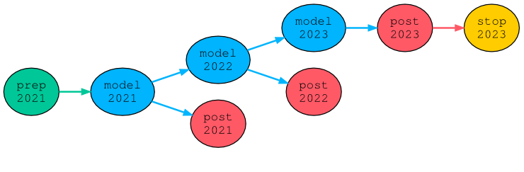
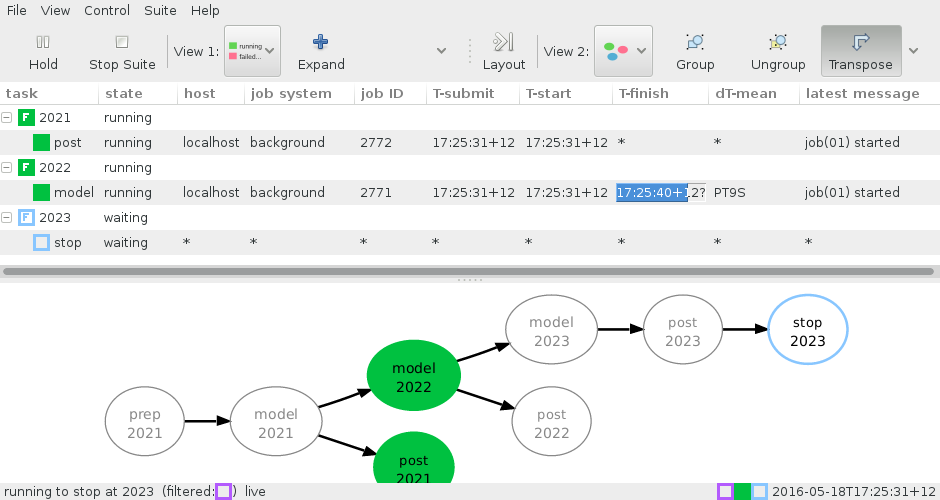

See FAQ.
If you have access to cylc, type cylc doc or use the GUI “Help” menu to view
an online copy is available here:
Cylc User Guide 6.10.0 (PDF, ~3.3MB)
The following example is intended to convey something of cylc’s basic functionality. However, it barely scratches the surface; to understand more, read the User Guide!
$ mkdir -p /home/bob/suites/test/
$ vim /home/bob/suites/test/suite.rc
[cylc]
cycle point format = %Y
[scheduling]
initial cycle point = 2021
final cycle point = 2023
[[dependencies]]
[[[R1]]] # Initial cycle point.
graph = prep => model
[[[R//P1Y]]] # Yearly cycling.
graph = model[-P1D] => model => post
[[[R1/P0Y]]] # Final cycle point.
graph = post => stop
[runtime]
[[root]] # Inherited by all tasks.
script = sleep 10
[[model]]
script = echo "my FOOD is $FOOD"; sleep 10
[[[environment]]]
FOOD = icecream
[visualization]
default node attributes = "style=filled", "shape=ellipse"
[[node attributes]]
prep = "fillcolor=#00c798"
stop = "fillcolor=#ffcc00"
model = "fillcolor=#00b4fd"
post = "fillcolor=#ff5966"
$ cylc register my.suite /home/bob/suites/test
REGISTER my.suite: /home/bob/suites/test
$ cylc db print my.suite
my.suite | No title provided | ~/suites/test
$ cylc edit my.suite # Open the suite in your editor again.
$ cylc help # See other commands!
$ cylc validate my.suite
Valid for cylc-6.10.1
$ cylc graph my.suite &

$ cylc run my.suite
# OR
$ gcylc my.suite & # (and run it from the GUI)

$ cylc log -o my.suite model.2021
JOB SCRIPT STARTING
cylc Suite and Task Identity:
Suite Name : my.suite
Suite Host : niwa-34403.niwa.local
Suite Port : 7766
Suite Owner : oliverh
Task ID : model.2021
Task Host : niwa-34403.niwa.local
Task Owner : oliverh
Task Submit No.: 1
Task Try No.: 1
my FOOD is icecream
cylc (scheduler - 2016-05-18T17:25:18+12): started at 2016-05-18T17:25:18+12
cylc (scheduler - 2016-05-18T17:25:28+12): succeeded at 2016-05-18T17:25:28+12
JOB SCRIPT EXITING (TASK SUCCEEDED)